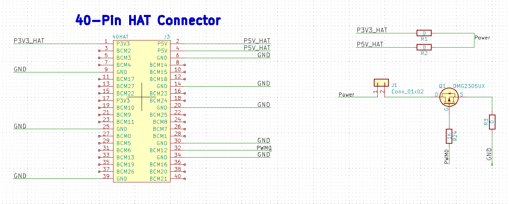
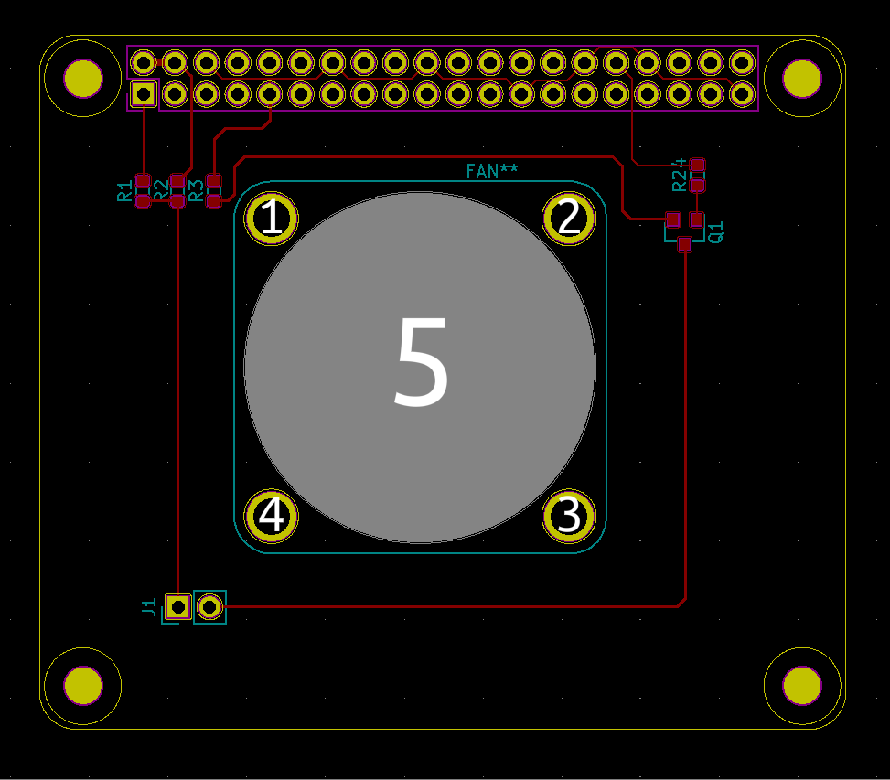

制作风扇扩展板FanHAT
KiCad制作风扇扩展板FanHAT
画板工具
KiCad
有树莓派模板；
可以看CM4的扩展板设计，要最新的未发行的版本
因为这个原因学习的KiCad
和常用的其他的软件有差异，用起来可能有点不舒服，不过用惯了也就没什么感觉
打样
https://github.com/LowLevelOfLogic/RaspberryPi/blob/FanHAT/hardware/FanHAT.zip
嘉立创
一个月两次5元
捷配
一个月一次免费
FanHAT
https://github.com/LowLevelOfLogic/RaspberryPi/tree/FanHAT/hardware
原理图
PCB

关于器件封装
时间久了链接可能失效，自行提取链接文字检索
DC5V 3CM厘米 30MM 3007 超小迷你直流无刷散热小风扇3D打印机DIY
3007
尼龙铆钉按压式塑料铆钉R型 PC板铆钉塑胶卡扣塑料子母铆钉R3R4R5
R3080
【优信电子】贴片 SOT-23 AO3400 MOS场效应管 2.5A（20只）
SOT-23
电阻、电容
0603
多犯几次错，不断积累经验，然后就做成了
工具
电烙铁
焊锡
镊子
黄花907调温电烙铁套装60W恒温烙铁家用 电脑维修焊接 烙铁套装
只是给一个示例，购买根据自己情况
焊接技巧
理解锡高温熔化会产生表面张力，会把轻的元器件拉到位
要把一个器件卸下来，要多上锡，增加热熔，而不是把锡吸了，然后电烙铁在上面频繁来回倒腾，很容取下元其器件
有热风枪就直接吹，省事
两个引脚焊锡连在一起了，也是多上锡，然后通过电烙铁拖锡的时候，可以很轻易的处理
网上找点资料看看，我是跟以前硬件工程师学的